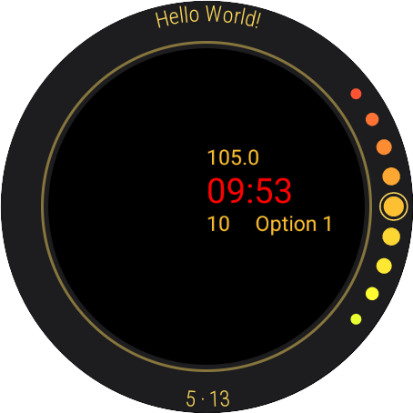
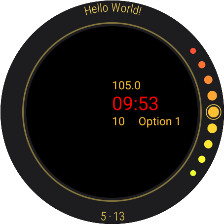
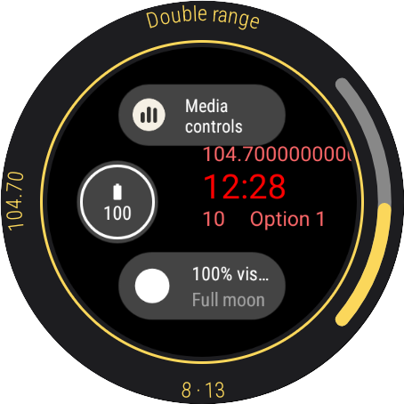
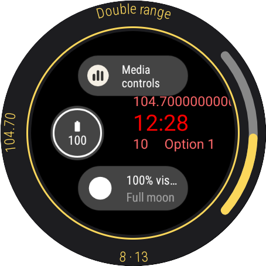

While creating my first watch face using the Jetpack Watch Face API I discovered that there is no standard editor in the smartwatches, and that for each new watch face it is necessary to create a new editor.
As I intend to develop more watch faces using the Jetpack API, and I like the design and interaction mode of the WFS editor, I decided to create a module, with a similar interface, to standardize and simplify the creation of editors. I also decided to share this module, as a library, to help others.
This documentation guides on how to implement the library and how to use/customize it.


 


 
